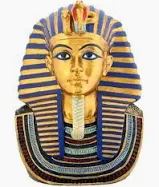

must-have souveniers you can't leave egypt without!
top 10 souveniers to buy

Mini Pharonic Statue
Mini pharaonic statues are commonly made of wood , ivory or stone ,and were believed to hold spiritual significance. They reflect the skill of ancient artisans, so giving one as a gift from Egypt holds even more significance, as it carries a piece of the country’s rich history and tradition.
250EGP 175EGP
Ancient Egyptian broad collar necklace
Inspired by ancient Egyptian royalty, pharaonic jewelry features symbols of power, protection, and beauty as it was worn by kings, queens, and nobles.These handcrafted pieces reflect the rich history of Egypt and the elegance of its past.
They make meaningful gifts, timeless, artistic, and full of cultural value.
250EGP 100EGP
Hand Painted papyrus Scroll
Hand-painted papyrus scrolls are valued for their cultural and historical significance.They offer a glimpse into ancient Egyptian art and traditions, making them a unique and meaningful gift. If you present one to someone, it carries a piece of Egypt’s ancient heritage, which is highly appreciated worldwide for its craftsmanship and symbolism
300EGP 250EGP
A Camel Leather Bag
Handcrafted from durable camel leather, these bags are known for their unique texture and natural colors. With a long tradition in Egypt, each bag reflects timeless craftsmanship and cultural heritage.
A perfect gift, fashionable, offering quality, style, and a piece of Egypt’s rich history.
600EGP 499EGP
Egyptian Style Copper Lantern
Egyptian copper lanterns are beautifully handcrafted, showcasing intricate designs inspired by ancient Egyptian art and patterns. Made with high-quality copper, these lamps stand out for their durability and unique craftsmanship.
The process of making these lamps is a time-honored tradition in Egypt, passed down through generations of skilled artisans. They make an elegant and meaningful gift, carrying the charm of Egyptian heritage
1000EGP 749EGP
Pharoh-Shaped Ceramic Vase
Handcrafted with traditional Egyptian designs, these ceramic vases showcase vibrant colors and intricate patterns. They reflect Egypt’s rich cultural history, blending ancient art with modern craftsmanship.
As a gift, they offer a unique piece of Egypt’s heritage, a timeless and meaningful addition to any home.
3200EGP 2300EGP
Handmade Woven rugs
Handmade Woven Rugs are handwoven with intricate patterns inspired by ancient Egyptian art and culture. Crafted using traditional techniques, these rugs showcase stunning geometric designs, floral motifs, and vibrant colors that reflect the country’s rich heritage.
As a gift, a handmade woven rug is a beautiful way to bring a touch of Egypt’s history and craftsmanship into any home, making it a meaningful and timeless present.
4500EGP 3700EGP
Mix of Egyptian spices
Egyptian spice mixes are a blend of uique, aromatic spices that add rich flavor to many traditional dishes. With ingredients like cumin, coriander, cinnamon, and cloves, these mixes have been part of Egyptian cooking for thousands of years, passed down through generations.
They’re a perfect gift for those who love cooking or want to explore new flavors.
100EGP 75EGP
Traditional Nubian waistcoat
Nubian clothes are colorful and full of life. They come from southern Egypt and are made by hand using bright fabrics and traditional designs.
These clothes represent the rich culture and history of the Nubian people. They make a unique and meaningful gift, carrying a piece of Egypt’s heritage.
275EGP 230EGP
Egyptian Musk
Soft, sensual, and timeless — Egyptian musk and essential oils have been treasured since the days of the pharaohs. Each drop carries the soul of Egypt: pure, natural, and unforgettable.
A gift like this isn’t just a scent , it’s a story, a memory, a piece of magic from the land of the Nile.